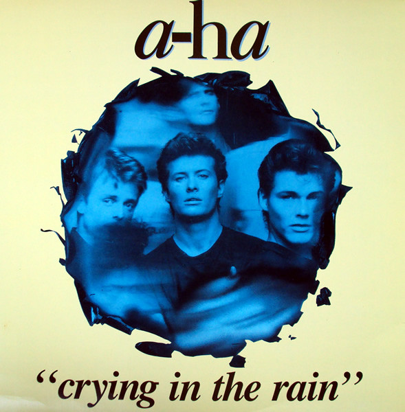
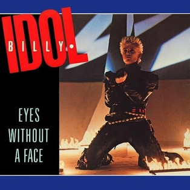
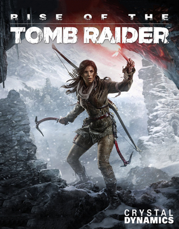
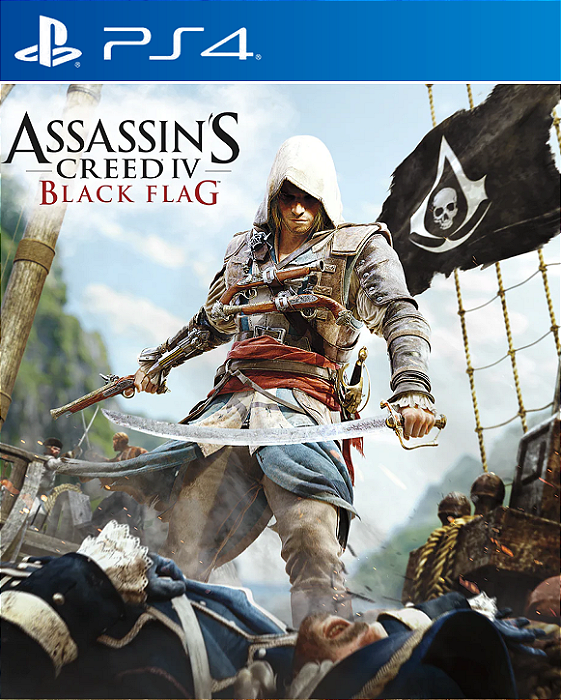

Filmes e Séries

Harry Potter e a Pedra Filosofal é um filme britano-americano de 2001, baseado no livro homônimo de J.K. Rowling. Este primeiro filme da série conta a história de quando Harry Potter descobre que é um bruxo e vai estudar na Escola de Magia e Bruxaria de Hogwarts.

Hannibal é uma série de televisão estadunidense de gênero crime e drama, Hannibal acompanha Will Graham, um investigador do FBI com habilidade única para reconstruir crimes, que trabalha ao lado do brilhante e enigmático psiquiatra Hannibal Lecter. A série se destaca pela estética visual sofisticada, atuações intensas de Mads Mikkelsen e Hugh Dancy, e narrativa psicológica que foge do modelo procedural.
Músicas

"Crying in the Rain" é uma canção composta por Howard Greenfield e Carole King e originalmente gravada pela dupla The Everly Brothers. é um single da banda norueguesa A-ha, sendo o primeiro do álbum East of the Sun, West of the Moon, lançado em 1990. É uma das músicas mais populares do grupo.

Eyes without a face é uma música do cantor de rock inglês Billy Idol, do segundo álbum de estúdio do Idol, Rebel Yell (1983).Foi lançado em abril de 1984 como o segundo single do álbum nos EUA, e em junho daquele ano no Reino Unido.A balada tem um caráter mais suave do que a maioria dos outros singles do álbum. Chegou ao quarto lugar na Billboard Hot 100,tornando-se o primeiro hit do Idol no top 10 nos EUA.
Games!

Rise of the Tomb Raider é um jogo de ação e aventura de 2015 desenvolvido pela Crystal Dynamics e publicado pela Microsoft Studios e Square Enix.Sua história acompanha Lara Croft enquanto ela se aventura na Sibéria em busca da lendária cidade de Kitezh, enfrentando a organização paramilitar Trinity, que pretende revelar a promessa de imortalidade da cidade. Lara precisa atravessar o ambiente e combater inimigos com armas de fogo e furtividade enquanto explora centros semiabertos.

Assassin's Creed IV: Black Flag é um jogo eletrônico de ação e aventura de 2013 desenvolvido pela Ubisoft Montreal e publicado pela Ubisoft. O enredo se passa em uma história fictícia de eventos do mundo real e segue a luta milenar entre a Assassinos, que lutam para preservar a paz e o livre arbítrio, e os Templários, que desejam a paz através do controle.